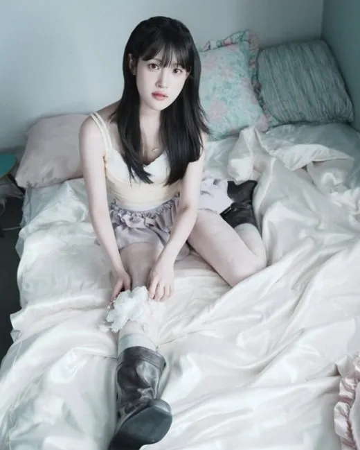
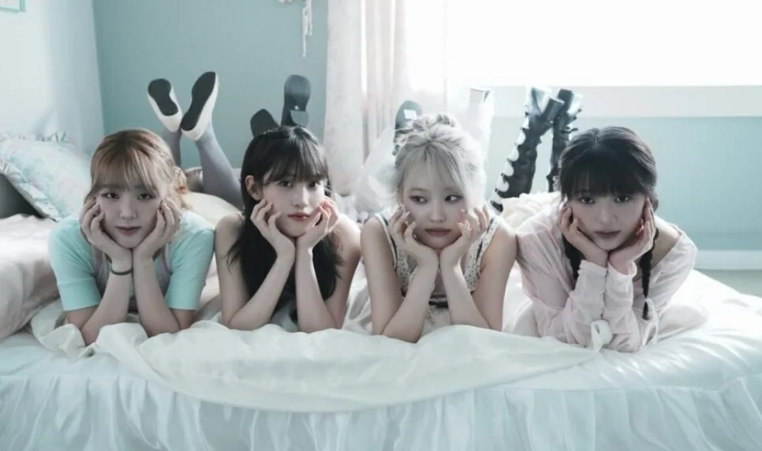
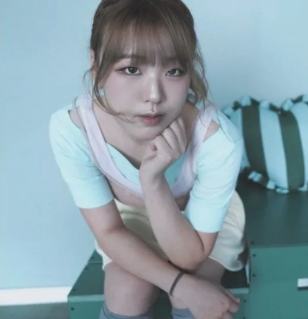
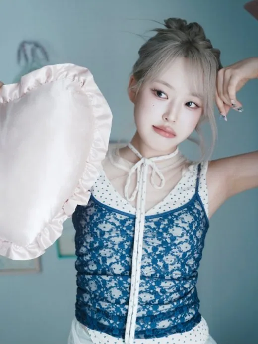
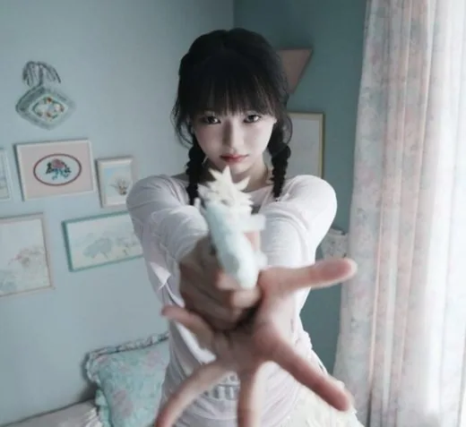

Yujin
Yujin (유진) · Actrice, spécialiste de cheerleading ; aide les membres à transmettre leurs émotions dans les clips (couleur rose) · Coréenne

K-POP
Découvre IEOKIT et les profils de ses membres sur IBASE Asian Pop.
Ouvrir la fiche interactiveHistoire : IEOKIT (이어킷) est un girl group indépendant de 4 membres. Son nom associe le verbe coréen 이어지다 (« relier ») et le mot anglais « kit » : des éléments séparés qui s'assemblent en un seul tout. Le compte Instagram est lancé le 6 juin 2026, puis les membres sont dévoilées du 15 au 21 juin (Yujin, Ion, Romy, Jaeyoun). Le groupe débute le 26 août 2026 avec le single « CONNECT », dont le clip sort le 2 septembre. Ion, danseuse et chorégraphe (ex-MiMAUVE), est à l'origine du projet et a réuni les autres membres : Yujin est actrice, Jaeyoun a débuté en solo le 30 décembre 2024 avec l'EP « Shape of », et Romy, la maknae, est danseuse (THE L♥VE OFFICE). Couleurs : Yujin rose, Ion aigue-marine, Jaeyoun violet, Romy orange. Sources : KProfiles, Wiki Fandom.
Débuts : 26 août 2026 (single digital « CONNECT »)
Agence : Indépendant (sans agence)

Yujin (유진) · Actrice, spécialiste de cheerleading ; aide les membres à transmettre leurs émotions dans les clips (couleur rose) · Coréenne

Ion (이온) · Fondatrice du projet, planification créative et réseaux, danseuse et chorégraphe (couleur aigue-marine) · Coréenne

Jaeyoun (재연) · Compositrice et topliner, responsable de la production musicale (couleur violet) · Coréenne

Romy (로미) · Maknae, danse et chorégraphie, parle japonais (couleur orange) · Coréenne